ECON 2316 • Microeconomic Theory • Chapter 5
From bent budget lines to the Lagrangian — six closed-form demand systems, a kink that costs the federal government \$70B per year, and a multiplier borrowed from celestial mechanics.
Dr. Richeng Piao
Department of Economics
Northeastern University
By the end of class today, you will be able to…
5.1
Formalize the budget set \(B(p, I)\) and the budget constraint; predict the rotation/shift caused by price and income changes. (Bloom L3)
5.2
State and derive the two equivalent FOCs of an interior optimum: \(\mathrm{MRS} = p_1/p_2\) and \(MU_1/p_1 = MU_2/p_2 = \lambda\). (Bloom L4)
5.3
Set up and solve the Lagrangian \(\mathcal{L} = U + \lambda(I - p_1 x_1 - p_2 x_2)\); interpret \(\lambda^*\) as the marginal utility of income (utils/\$). (Bloom L4)
5.4
Derive closed-form Marshallian demand for the four canonical utility families — Cobb-Douglas, perfect substitutes, perfect complements, quasilinear. (Bloom L4)
5.5
Diagnose corner solutions and kinked-budget optima (KKT preview); apply to labor-leisure, ACA APTC, and SNAP. (Bloom L5)
You have $200 a month
Pick from a menu of typical 2025 prices:
You’re solving an optimization problem.
You’re weighing what each option gives you against what it costs. Every choice has an opportunity cost — an extra night out is a gym membership you didn’t buy.
Today: first what you can afford (the budget set), then the best bundle you want (utility maximization via the Lagrangian).
Two ingredients: what you can afford + what you want.
The average U.S. household spent $78,535 in 2024. Housing + transportation alone took up roughly half of the budget.
| Category | Share | Spending |
|---|---|---|
| Housing | 32.9% | $25,786 |
| Transportation | 17.0% | $13,174 |
| Food | 12.9% | $9,985 |
| Insurance & pensions | 12.3% | $9,706 |
| Healthcare | 8.0% | $6,279 |
| Entertainment | 4.8% | $3,792 |
| All other | 12.1% | $9,813 |
The big-three squeeze
Housing (33%), transport (17%), food (13%) absorb ~63% of the average household’s budget — almost all of it goes to necessities before any discretionary choice begins.
What this means for the model
A real household’s “budget” for two-good choices is the slice left after fixed obligations. We model it with a small income (e.g. Maya’s $16/week) to keep the math clean.
Source: U.S. BLS, Consumer Expenditure Surveys, 2024 data.
bls.gov/opub/ted/2026/housing-and-transportation-accounted-for-50-percent…
15 min · What the consumer can afford — and why real budgets bend
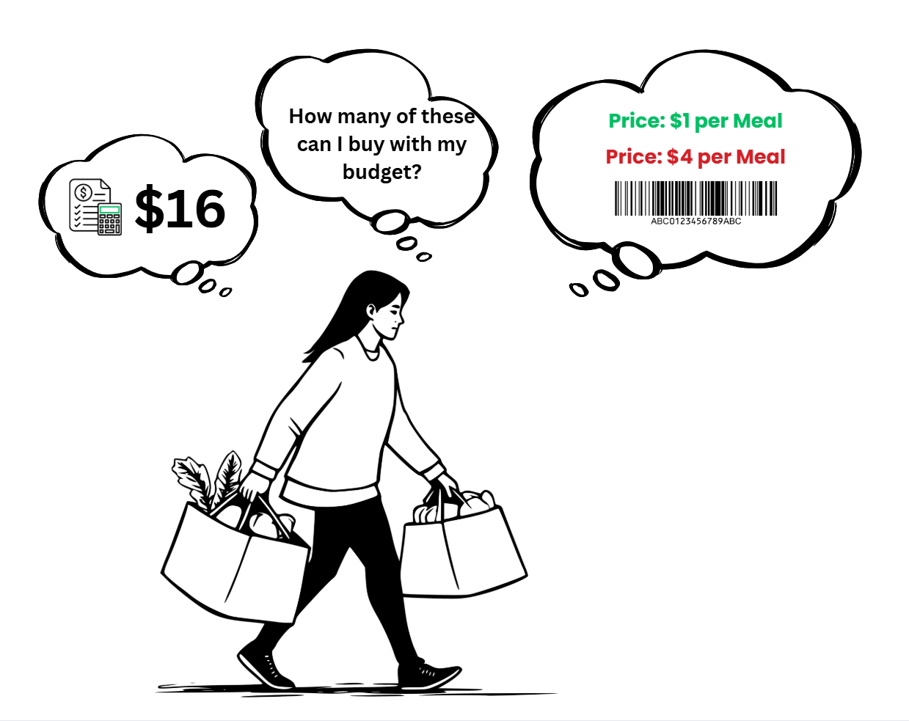
Budget constraint: all combinations of two goods a consumer can afford given income and prices.
Maya, NU student
$16/week for food. Two goods: pizza slices ($4 each) and ramen ($1 each).
Two endpoints
All on pizza: 4 slices. All on ramen: 16 packs.
Slope \(= -P_{\text{pizza}}/P_{\text{ramen}} = -4\) — 1 pizza slice costs 4 ramen.
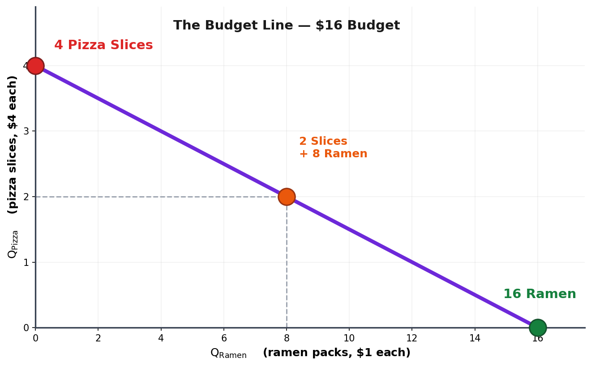
Pin the midpoint
Spend half on each:
• $8 on pizza → $8/$4 = 2 slices
• $8 on ramen → $8/$1 = 8 ramen
The budget line shows the possible purchasing combinations of two products given a specific budget.
Personal preferences determine which combination on the line is actually chosen.
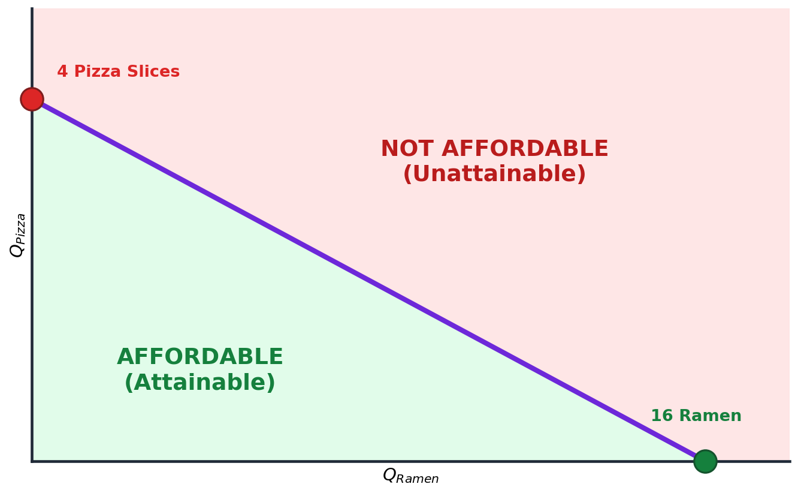
Inside or on the line
Attainable. Maya can buy these bundles. On the line = spent every dollar. Below the line = saved some money.
Above the line
Unattainable. Cost would exceed $16. Maya can’t buy any of these bundles — not with her current income and prices.
The budget constraint is the curve of every consumption bundle the consumer can afford when spending all of their income. Plotted alongside indifference curves to find the optimum.
Step 1 — Two-good income identity
\[\text{Income} \;=\; P_X Q_X + P_Y Q_Y\]
Step 2 — Solve for \(Q_Y\) (slope-intercept)
\[Q_Y \;=\; \dfrac{\text{Income}}{P_Y} \;-\; \dfrac{P_X}{P_Y} \, Q_X\]
Maya's budget — \(I=\$50\), \(P_L=\$5\), \(P_B=\$10\)
\[Q_B \;=\; 5 \;-\; \tfrac{1}{2} \, Q_L\]
Intercepts \(A = (10, 0)\) and \(B = (0, 5)\), slope \(-P_L/P_B = -1/2\).
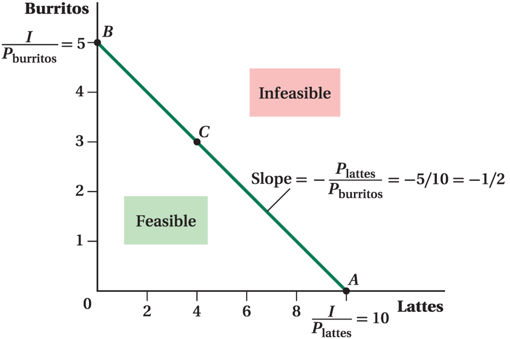
Maya's budget set in (lattes, burritos) space.
Market prices: lattes $5 · burritos $10
\[B(p_1, p_2, I) = \{(x_1, x_2) \in \mathbb{R}^2_{+} \mid p_1 x_1 + p_2 x_2 \leq I\}\]
The set of bundles the consumer can afford — a triangle in two-good space, bounded by the non-negativity orthant and the budget line.
Boundary — the budget constraint
\[p_1 x_1 + p_2 x_2 = I\]
Anatomy
The slope and position of the budget constraint are functions of two factors: income and relative prices.
1. Change in income
Shifts the budget constraint by changing the intercepts (both \(I/p_1\) and \(I/p_2\) scale by the same factor). Slope unchanged.
2. Change in the price of one good
Pivots the budget constraint by changing the slope (\(-p_1/p_2\)) and the affected good's intercept; the other intercept stays put.
Three changes to Maya's burrito/latte budget on the next slide:
(a) Doubling of the price of lattes | (b) Doubling of the price of burritos | (c) Reduction in income by \(1/2\)
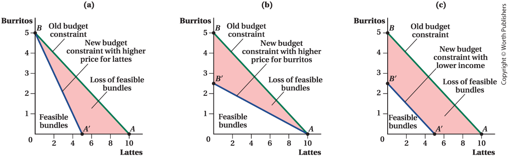
(a) \(2 \times p_L\) (lattes)
\(Q_B = 5 - \tfrac{1}{2} Q_L\)
\(\to \;\; Q_B = 5 - Q_L\)
Pivot around \(B\); \(A \to A'\); slope steepens.
(b) \(2 \times p_B\) (burritos)
\(Q_B = 5 - \tfrac{1}{2} Q_L\)
\(\to \;\; Q_B = 5 - \tfrac{1}{4} Q_L\)
Pivot around \(A\); \(B \to B'\); slope flattens.
(c) \(\tfrac{1}{2} \times\) Income
\(Q_B = 5 - \tfrac{1}{2} Q_L\)
\(\to \;\; Q_B = 2.5 - \tfrac{1}{2} Q_L\)
Parallel inward shift; same slope.
\(p_1\) rises with \(p_2\) and \(I\) held fixed:
Price rotation = same income, different relative prices ⇒ the menu of feasible trade-offs changes.
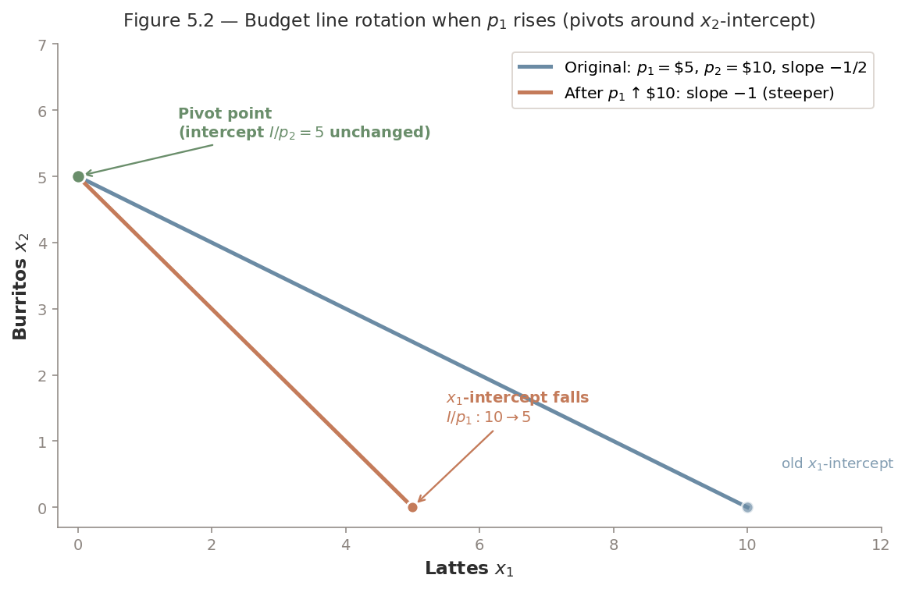
Figure 5.2 — \(p_1\) rises ⇒ pivot inward along \(x_1\) axis.
\(I\) rises with both prices held fixed:
Income shift = same relative prices, more money ⇒ pure income effect, no substitution effect.
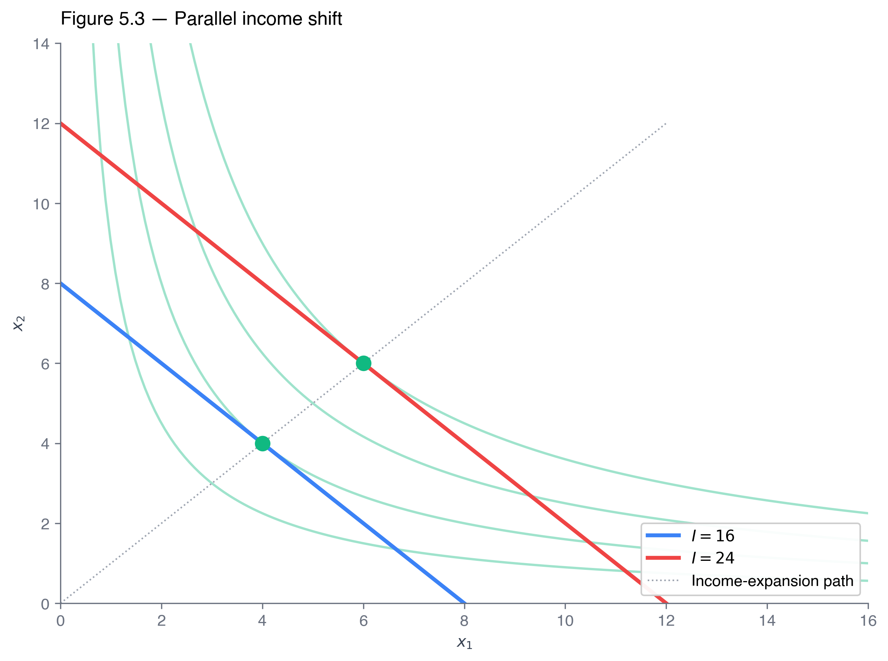
Figure 5.3 — \(I\) rises ⇒ parallel outward shift, same slope.
Scale \((p_1, p_2, I)\) by any factor \(\alpha > 0\). Then the new constraint is
\[\alpha p_1 x_1 + \alpha p_2 x_2 = \alpha I \;\;\iff\;\; p_1 x_1 + p_2 x_2 = I.\]
Both sides divide by \(\alpha\). The budget set is identical. Doubling everything is the same as doubling nothing.
Vocabulary
\(B(p, I)\) is homogeneous of degree zero in \((p, I)\). Demand inherits the property: \(x_i^*(\alpha p, \alpha I) = x_i^*(p, I)\).
Why this matters. Pure inflation — all prices and wages move proportionally — leaves real consumption unchanged in this model. The Phillips-curve story is about relative price stickiness, not the homogeneity property itself.
Problem
Alex has \$150 / month discretionary for entertainment, split between video games \(G\) (\$80 each) and Uber Eats deliveries \(U\) (\$30 each).
Context: 2025 US average household total expenditure was \$78,535 (BLS CEX), of which entertainment makes up ~4.7%.
(a) Original constraint.
\[80G + 30U = 150 \;\;\Longleftrightarrow\;\; U = 5 - \tfrac{8}{3}G.\]
Intercepts: \(A = (0, 5)\) all food, \(B = (150/80, 0) = (1.875, 0)\) all games. Slope \(-p_G/p_U = -80/30 = -8/3 \approx -2.67\) — each game costs \(8/3\) Uber Eats deliveries.
(b) One game: \(\$80\) on the game, \$70 left for delivery \(\Rightarrow U = 70/30 = 7/3 \approx 2.33\). Point \(C = (1,\, 7/3)\).
Press Space to reveal each step · ↓ to advance to part (c).
New constraint at \(p_G = 50\), \(p_U = 30\), \(I = 150\):
\[50G + 30U = 150 \;\;\Longleftrightarrow\;\; U = 5 - \tfrac{5}{3}G.\]
Geometric reading. The line pivots outward around the vertical intercept \(A\), opening the triangle \(ABD\) of newly feasible bundles. Whenever a price drops, the line rotates outward around the unaffected intercept.
Headline takeaway. The slope is always \(-p_G/p_U\) regardless of income; income changes shift the line parallel, price changes rotate it. Foundational for every later walkthrough.
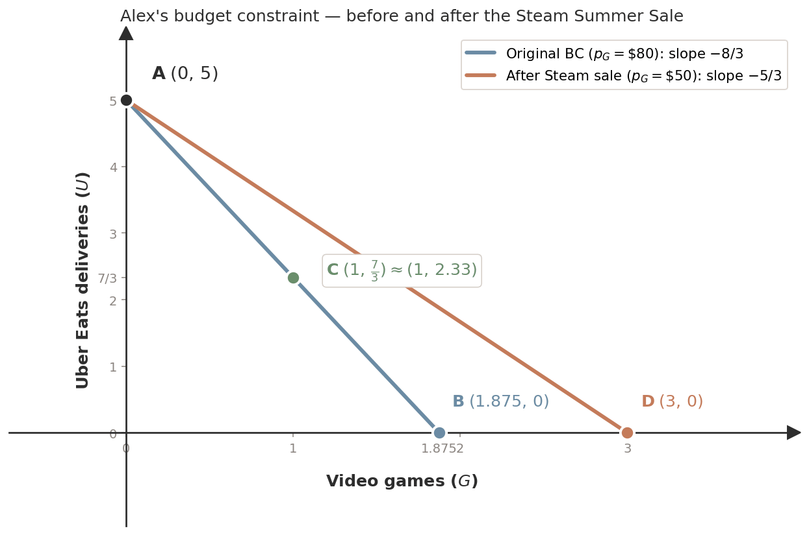
Reading the four points
Point A \((0,\,5)\) — shared y-intercept. Income \$150 and Uber Eats price \$30 didn't change, so all-food bundle is unchanged.
B \((1.875,\,0)\) \(\to\) D \((3,\,0)\) — the all-games corner shifts outward because games got cheaper. Pivot is around A.
Point C \(\left(1,\,\frac{7}{3}\right)\) — the 1-game bundle from part (b), sits on the original BC. \$80 on the game, \$70 left for ~2.33 deliveries.
Takeaway
The triangle ABD — the wedge between the two BC lines — is the set of bundles the Steam sale newly puts within reach. Same income, same delivery price, just one good got cheaper.
Setup
Lin (econ-CS double major) has \$30/week between energy drinks \(E\) at \$5 and Claude API tokens \(T\) (millions). Tier pricing: \$3/M for the first 5M tokens (Standard sync), then \$1.50/M beyond 5M (Batch API, 24h async).
Step 1 — Standard segment \((T \leq 5)\)
All tokens at standard rate. Spend \(5E + 3T = 30\):
\[T = 10 - \tfrac{5}{3}E \;\;\text{slope} = -\tfrac{5}{3}\]
Each energy drink forgone ⇒ \(5/3\!\approx\!1.67\) M tokens.
Step 2 — Batch segment \((T > 5)\)
First 5M at \$3/M, rest at \$1.50/M. Spend \(5E + 15 + 1.5(T-5) = 30\):
\[T = 15 - \tfrac{10}{3}E \;\;\text{slope} = -\tfrac{10}{3}\]
Each energy drink forgone ⇒ \(10/3\!\approx\!3.33\) M tokens (Batch).
Step 3 — The kink
The two segments meet at \(E = 3,\; T = 5\) — exactly where Lin has spent \$15 on tokens (5M at standard rate). Above the kink, each energy drink forgone now buys twice as many tokens. Budget line kinks outward.
Universal pattern. Volume discounts turn the relative price into a piecewise-constant function. Same structure: AWS S3 tiers · Costco bulk eggs · electricity tier-2 rates · Spotify family vs solo.
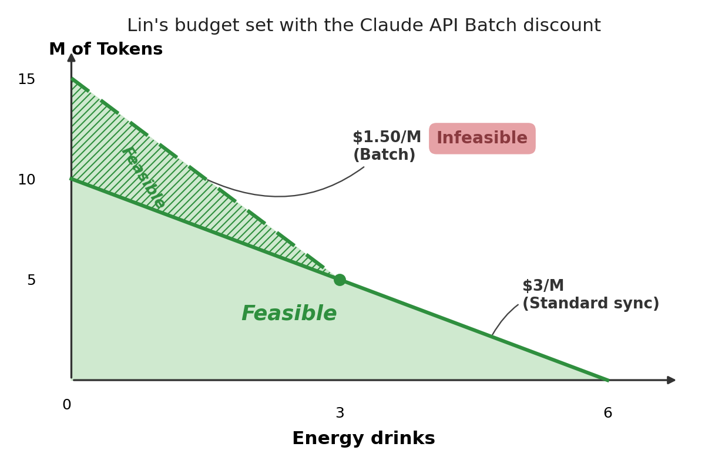
Reading the figure
Solid line — hypothetical standard-only BC from \((0,\,10)\) to \((6,\,0)\).
Dashed line — actual BC's discount extension from \((0,\,15)\) to the kink \((3,\,5)\).
Hatched zone — extra bundles unlocked by Batch pricing (the wedge).
Kink at \((3,\,5)\) — \$15 spent on tokens, exactly where Batch kicks in.
Diagnostic (preview §5.5)
Any optimum sits in green-or-hatched. Compare \(\mathrm{MRS}\) to both price ratios — \(3/5\) on the solid, \(1.5/5\) on the dashed — to find which segment (or the kink) wins.
A second way a budget constraint can kink: a hard limit on how much of one good a consumer is allowed to buy. Neither income nor prices change — the cap blocks bundles the consumer could still afford.
Effect on the budget constraint
The constraint goes horizontal at the cap quantity. Some bundles you can afford are now off-limits — a quantity restriction, not a price one.
Apply to Lin
Suppose Anthropic imposes a hard 5M-token weekly rate limit on her API key — a real-world AI rate cap. Lin's income is still \$30, energy drinks still \$5, tokens still \$3/M Standard / \$1.50/M Batch — but the cap kicks in. What does her budget set look like now? (Next slide.)
Concrete real-world quantity-limit examples (iPhone launch, WWII rationing, COVID caps, AI rate limits) — see §5.1.4 closing «Other real-world kinks» slide.
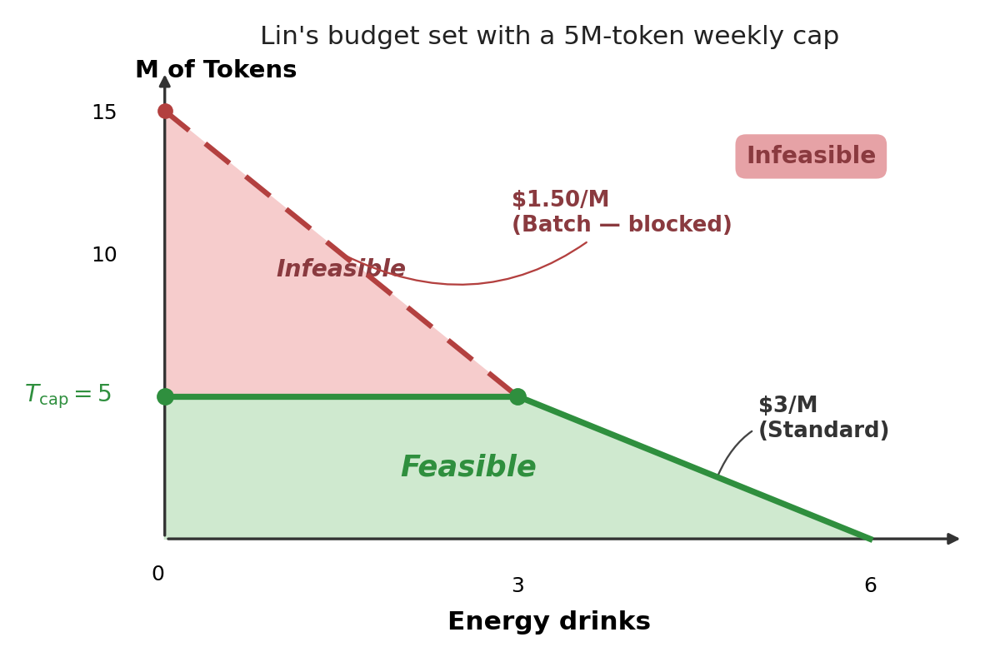
Reading the figure
Same \$30/week, same prices — but Anthropic imposes a 5M-token weekly rate limit on her API key (an AI rate cap).
Horizontal at \(T = 5\) — constraint is now flat for \(E \in [0, 3]\). Lin can't buy any tokens above the cap, regardless of how much money she has left.
Pink triangle = infeasible. The previous Batch wedge is now off-limits — bundles Lin can afford but can't buy.
On the horizontal segment, Lin has money left over — her budget no longer binds. Anywhere on that flat top, \(5E + 3T < 30\).
Teaser for §5.2
Lin will never optimally choose a bundle on the flat segment — she'd rather trade unspent dollars for energy drinks than throw them away. Can you see why before we tell you in §5.2?
Two families of kinked budgets. Quantity restrictions make the constraint go horizontal at the cap. Policy & market kinks bend the slope at thresholds or replace the continuous line with a discrete menu.
Quantity restrictions — horizontal cap
iPhone launch
Apple caps new-model orders at one per customer on launch day.
WWII rationing
Sugar, butter, gas, meat — fixed quotas via ration books (1942–1946).
COVID (2020)
Grocers capped toilet paper, sanitizer, formula — "limit 2 per customer."
AI rate limits (2025)
Anthropic / OpenAI cap tokens per minute & per day on free / Plus tiers.
Policy & market kinks — slope shift or discrete set
ACA APTC
Premium subsidy phases out at the income threshold — slope changes mid-line.
SNAP
~\$188/mo benefit (~41M Americans) creates a horizontal extension along the food axis.
Streaming bundles
Disney+/Hulu/Max bundle — discrete menu, not a continuous line.
Tax brackets
One kink per marginal-rate boundary — constraint is piecewise-linear.
Pattern
Whether the kink comes from a cap, a subsidy phase-out, an in-kind transfer, a bundle, or a tax bracket — the Lagrangian framework adapts piecewise: solve the FOCs on each smooth segment, then compare candidates at the kink. Full treatment in §5.5 and Appendix §5.A.
Suppose income doubles from \(I\) to \(2I\), and \(p_1\) doubles from \(p_1\) to \(2 p_1\), while \(p_2\) stays the same. What happens to the budget set?
60 sec to vote
\[\frac{I'}{p_1'} = \frac{2I}{2p_1} = \frac{I}{p_1}, \qquad \frac{I'}{p_2'} = \frac{2I}{p_2} = 2 \cdot \frac{I}{p_2}.\]
The trap is C — equiproportional scaling leaves the budget set unchanged, but here only good 1's price scaled with income; good 2's relative price fell. Slope changes from \(-p_1/p_2\) to \(-2 p_1 / p_2\) — steeper. The set does grow, but only on the good-2 axis.
15 min · Two ways to write one optimum: slope form and ratio form
Chapter 4 gave us utility and indifference curves — how the consumer ranks bundles. §5.1 gave us the budget constraint — which bundles are feasible. Combining these gets us to choice.
The consumer's optimization problem
Maximize utility, subject to income and market prices.
Two equivalent characterizations of the optimum
We will see both characterizations are the FOC of the same Lagrangian (§5.3). For now, build the intuition table-first.
Goal: maximize total utility given budget
| Combo | QG | TUG | QU | TUU | TUcombo | Total cost |
|---|---|---|---|---|---|---|
| A | 0 | 0 | 5 | 225 | 225 | \(\$80\!\times\!0 + \$30\!\times\!5 = \$150\) |
| B | 0.5 | 90 | 11/3 | 190 | 280 | \(\$80\!\times\!0.5 + \$30\!\times\!\tfrac{11}{3} = \$150\) |
| C | 1 | 160 | 7/3 | 135 | 295 ← max | \(\$80\!\times\!1 + \$30\!\times\!\tfrac{7}{3} = \$150\) |
| D | 1.5 | 215 | 1 | 65 | 280 | \(\$80\!\times\!1.5 + \$30\!\times\!1 = \$150\) |
| E | 1.875 | 240 | 0 | 0 | 240 | \(\$80\!\times\!1.875 + \$30\!\times\!0 = \$150\) |
Utility values illustrative; diminishing marginal utility built in. \(\$ G\) = video games at \$80; \(\$ U\) = Uber Eats at \$30. All combos spend the full \$150 budget.
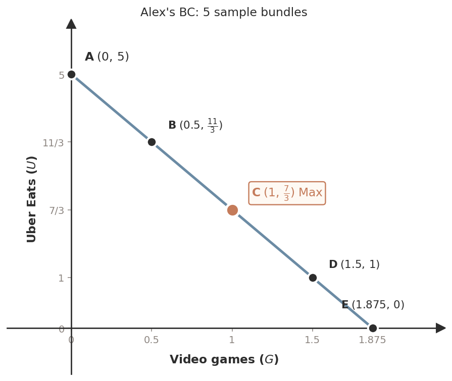
Optimal bundle:
(1 game, 7/3 deliveries)
\(TU^{\ast} = 295\)
Same five sample bundles from the utility table. Each row is one purchase step: the utility it adds (“TU gained” \(=\Delta TU\)) and the dollars spent on that step. Dividing the two gives MU per $ (utils gained ÷ dollars spent) — the number that drives the buying rule. The Combo column anchors each row to those bundles.
🎮 Video Games (\(p_G = \$80\))
| Combo | Q | TU | TU gained | $ spent | MU per $ |
|---|---|---|---|---|---|
| B | 0.5 | 90 | 90 | $40 | 90/40 = 2.25 |
| C | 1 | 160 | 70 | $40 | 70/40 = 1.75 ← |
| D | 1.5 | 215 | 55 | $40 | 55/40 = 1.375 |
| E | 1.875 | 240 | 25 | $30 | 25/30 ≈ 0.83 |
🍔 Uber Eats (\(p_U = \$30\))
| Combo | Q | TU | TU gained | $ spent | MU per $ |
|---|---|---|---|---|---|
| D | 1 | 65 | 65 | $30 | 65/30 ≈ 2.17 |
| C | 7/3 | 135 | 70 | $40 | 70/40 = 1.75 ← |
| B | 11/3 | 190 | 55 | $40 | 55/40 = 1.375 |
| A | 5 | 225 | 35 | $40 | 35/40 ≈ 0.875 |
Observation: The highlighted rows are Combo C — \((G=1,\; U=\tfrac{7}{3})\), the bundle that costs $150 and gave max TU = 295. Notice: MU per dollar = 1.75 for BOTH goods at Combo C. Next slide: spend Alex's $150 one purchase at a time using this table — do we end up at Combo C?
Start with $150 and \((G=0,\; U=0)\). Each round, buy whichever good gives more MU per $ right now (from the MU/$ table). Repeat until the budget is gone — do we land on Combo C?
✓ Budget spent. Final bundle: .
This is the highest-utility bundle $150 can buy — last MU/$ = 1.75 for both goods (equimarginal). Proof at right. →
Is it really the best?
Spend the full $150 to rank every feasible bundle by total utility.
Take a starting bundle on the budget line but not at the optimum. The rational consumer reallocates — and the Law of Diminishing MU drives the system back to equality.
Step 1 — Off-optimum bundle B: \((G=0.5,\; U=\tfrac{11}{3})\)
🎮 \(\dfrac{MU_G}{p_G} = \dfrac{180}{80} = \mathbf{2.25}\)
🍔 \(\dfrac{MU_U}{p_U} = \dfrac{41.25}{30} \approx \mathbf{1.375}\)
2.25 > 1.375 → Games gives more "bang per buck" → shift spending toward G.
Step 2 — Reallocate; LDMU pulls both ratios toward each other
Buy more G (0.5 → 1): \(MU_G\) falls 180 → 140 (LDMU)
⇒ \(MU_G/p_G\) drops 2.25 → 1.75
Buy less U (\(\tfrac{11}{3}\) → \(\tfrac{7}{3}\)): \(MU_U\) rises 41.25 → 52.5
⇒ \(MU_U/p_U\) rises 1.375 → 1.75
Step 3 — Convergence at Point C: \((G=1,\; U=\tfrac{7}{3})\)
\(\dfrac{MU_G}{p_G} = \dfrac{140}{80} = \mathbf{1.75}\) \(=\) \(\dfrac{MU_U}{p_U} = \dfrac{52.5}{30} = \mathbf{1.75}\) ✓ EQUAL — no more reallocation gains.
\[\boxed{\;\dfrac{MU_G}{p_G} \;=\; \dfrac{MU_U}{p_U}.\;}\]
Plain English
Allocate spending so the last dollar spent on each good buys the same amount of utility. If it didn't, you could swap a dollar to the better good and rise — you are not yet at the top.
Tie to Alex (W5.1)
At Point C (\(G=1,\; U=\tfrac{7}{3}\)): \(\tfrac{140}{80} = \tfrac{52.5}{30} = \mathbf{1.75}\). Same optimum we found by enumerating bundles in the utility table.
Reminder: MU is the derivative \(dU/dQ\); the MU/$ table uses \(\Delta TU/\Delta Q\) on 5 sample bundles. The Lagrangian gives the exact derivative-based optimum without sampling.
Equimarginal in plain English: the "sweet spot" is the plan where the last dollar still buys utility. Lowest price per GB ≠ best value — paying for empty space yields zero marginal utility.
Cloud Storage Wars — typical college-student usage
| Plan | Price | MU per \$ | Insight |
|---|---|---|---|
| iCloud+ (50 GB) |
\$0.99/mo | 101 (highest value) |
High utility for essential phone/photo backup — nearly all 50 GB gets used. |
| Google One (2 TB) |
\$9.99/mo | 60 (low value) |
Cheapest \$/GB on paper, but the typical user fills < 5%. Paying for empty space yields \(\approx 0\) MU. |
Price per GB: iCloud+ \(\approx\)\$0.020 · Google One \(\approx\)\$0.005 (lowest) — yet not the best value.
Optimization logic
The "sweet spot" is NOT the lowest price per unit.
It is the plan where the utility of the storage you actually use justifies the marginal dollar spent — pick the highest \(MU/\$\).
Same rule as Alex: Just like Combo C gave \(MU_G/p_G = MU_U/p_U\), the right plan equates \(MU\) per dollar across all spending options — not just cloud tiers, but everything else in the budget (groceries, streaming, etc.).
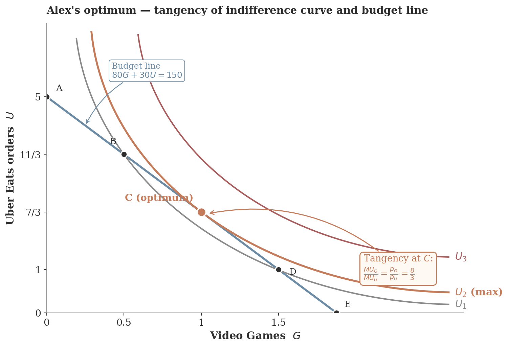
What the picture shows
The budget line (\$150) intersects three indifference curves. The highest one Alex can reach while staying on the budget is \(U_2\) — tangent at Point \(C\).
Tangency = Equimarginal
At \(C\), the IC and BC have the same slope: \(\;\dfrac{MU_G}{MU_U} = \dfrac{p_G}{p_U} = \dfrac{8}{3}.\;\) Rearrange: \(\dfrac{MU_G}{p_G} = \dfrac{MU_U}{p_U}\) — the rule from slide 26.
Why not B, D, or A/E? \(B\) and \(D\) sit on a lower IC (\(U_1\)) — affordable but suboptimal. \(U_3\) is higher but unreachable on $150. Only \(C\) is both affordable and on the highest reachable IC.
The problem
Riley spends her \$48 weekly fun budget on 🍣 sushi rolls (\(S\), \$8 each) and 🍡 mochi (\(M\), \$4 each). Her utility is Cobb-Douglas:
\[U(S, M) = \sqrt{S\,M} = S^{0.5} \, M^{0.5}\]
Marginal utilities (given):
\(MU_S = 0.5\,S^{-0.5} M^{0.5}\) · \(MU_M = 0.5\,S^{0.5} M^{-0.5}\)
What are Riley's utility-maximizing quantities \(S^*\) and \(M^*\)?
Step 1 — set MRS = price ratio
\(\mathrm{MRS}_{SM} = \dfrac{MU_S}{MU_M} = \dfrac{0.5\,S^{-0.5} M^{0.5}}{0.5\,S^{0.5} M^{-0.5}} = \dfrac{M}{S} = \dfrac{p_S}{p_M} = \dfrac{8}{4} = 2\)
⇒ \(M = 2S.\)
Step 2 — substitute into the budget
\(8S + 4M = 48 \;\;\Longrightarrow\;\; 8S + 4(2S) = 48 \;\;\Longrightarrow\;\; 16S = 48\)
⇒ \(S^{\!*} = 3\), \(M^{\!*} = 6.\)
Answer: Riley buys 3 sushi rolls + 6 mochi. Check: \(8(3) + 4(6) = 24 + 24 = \$48\) ✓. Equimarginal: \(\tfrac{MU_S}{p_S} = \tfrac{MU_M}{p_M} \approx 0.09\) utils/\$ at the optimum. Next slide — see it on the graph.
Try on your own · 3 min · press → to step through the solution
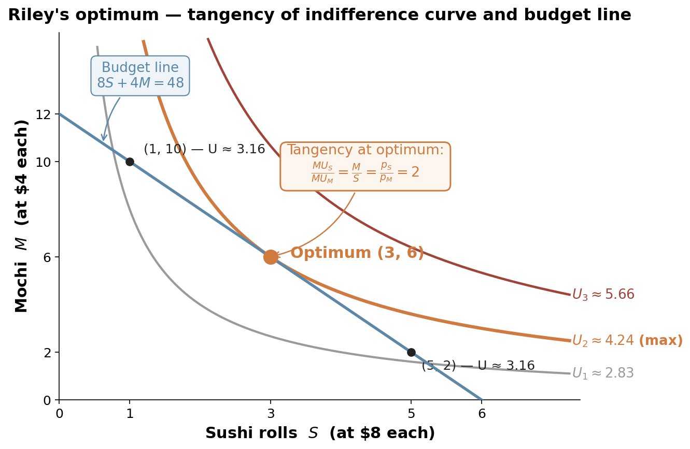
What the picture shows
The budget line intersects three indifference curves. The highest one Riley can reach while staying on her \$48 budget is \(U_2 \approx 4.24\) — tangent at (3, 6).
Tangency = Equimarginal
Both curves have slope \(-2\) at the optimum: \(\;\dfrac{MU_S}{MU_M} = \dfrac{M}{S} = 2 = \dfrac{p_S}{p_M}.\;\) Same FOC as Alex on the previous slide — only the numbers change.
Other on-budget bundles lose: \((1, 10)\) and \((5, 2)\) both cost \$48 but sit on \(U_1\) (\(U \approx 3.16\)) — lower utility. Only the tangency point hits the highest reachable IC.
\[\max_{x_1, x_2 \geq 0} \; U(x_1, x_2) \quad \text{subject to} \quad p_1 x_1 + p_2 x_2 \leq I.\]
Existence (Weierstrass)
\(U\) continuous on a compact budget set ⇒ the max exists. The compactness comes from the budget being a closed, bounded triangle.
Uniqueness
\(U\) strictly quasi-concave (preferences strictly convex) ⇒ the maximizer is unique. Recovered from Ch 4 axiom 4.
The output: Marshallian demand functions \(x_1^*(p_1, p_2, I)\) and \(x_2^*(p_1, p_2, I)\) — the central objects of consumer theory.
At an interior optimum, the highest indifference curve the consumer can reach is tangent to the budget line. Tangency means equal slopes:
Indifference-curve slope
\(-\mathrm{MRS}_{1,2} \;=\; -MU_1/MU_2\)
from implicit differentiation of \(U(x_1, x_2) = \bar{U}\), Ch 4
Budget-line slope
\(-p_1/p_2\)
opportunity cost of \(x_1\) in units of \(x_2\)
\[\boxed{\;\mathrm{MRS}_{1,2} \;=\; \dfrac{MU_1}{MU_2} \;=\; \dfrac{p_1}{p_2}.\;}\]
Geometric intuition. At a non-tangent point, the indifference curve crosses the budget line — slide along the budget line toward the steeper-IC side and the consumer reaches a higher curve. Tangency is the place where no such gain remains.
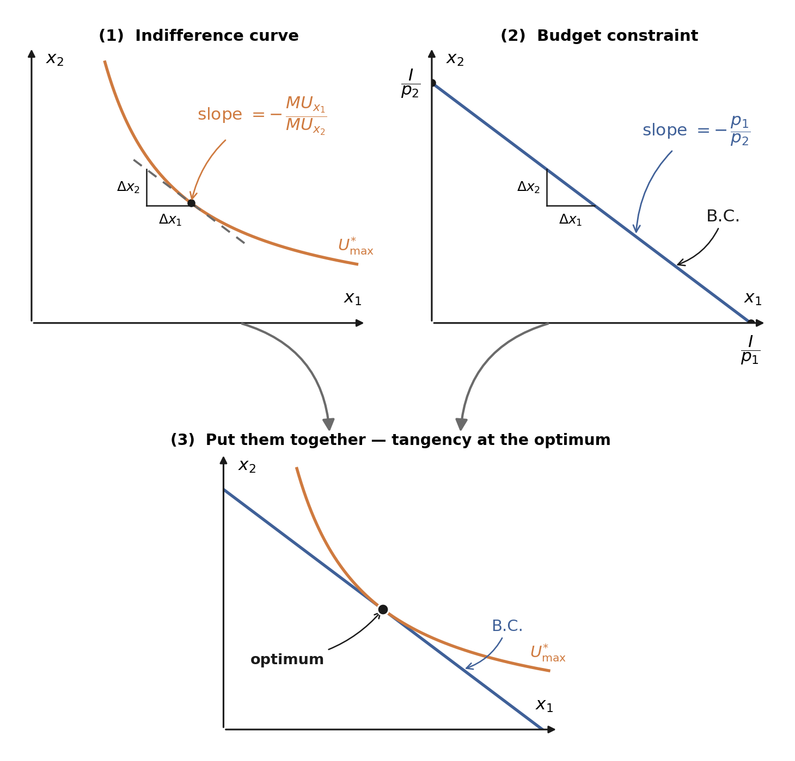
Read it as a flow
(1) the indifference curve sets the consumer's trade-off, slope \(-MU_1/MU_2\) (the MRS). (2) the budget line sets the market's trade-off, slope \(-p_1/p_2\). (3) the best affordable bundle is where the two are tangent.
\[\mathrm{MRS} = \dfrac{MU_1}{MU_2} = \dfrac{p_1}{p_2}\]
At any non-tangent point the indifference curve crosses the budget line — slide along the line toward the steeper-IC side and reach a higher curve. Tangency is where no such gain is left.
Rewrite the same FOC:
\[\dfrac{MU_1}{p_1} \;=\; \dfrac{MU_2}{p_2} \;=\; \lambda.\]
Marginal utility per dollar is the same for every good. If it weren't — say \(MU_1/p_1 > MU_2/p_2\) — the consumer would shift a penny from good 2 to good 1 and gain.
Generalizes to \(N\) goods: \(\;MU_i/p_i = \lambda\;\) for every \(i\). The slope form needs \(\binom{N}{2}\) pairwise equations; the ratio form needs just \(N\) parallel ones sharing the same \(\lambda\).
What \(\lambda\) means: the shared value is the shadow value of an extra \$1 of income — how much utility one more dollar buys at the optimum. The same \(\lambda\) falls out of the Lagrangian in §5.3; we unpack it next slide.
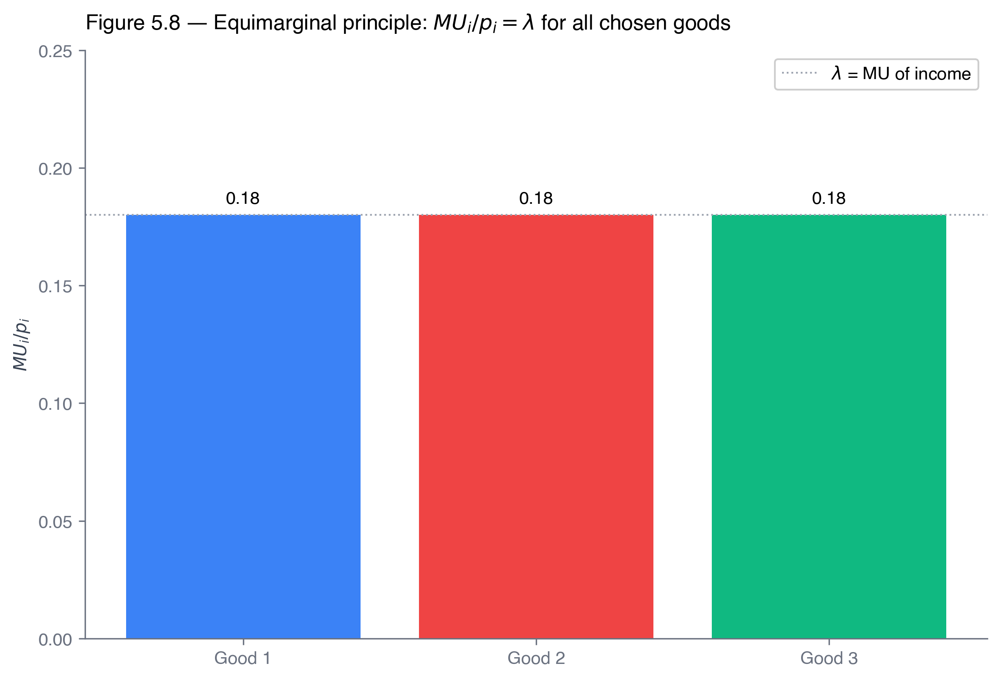
Figure 5.8 — equimarginal across three goods, common shadow value \(\lambda\).
If you handed the consumer one more dollar of income, how many additional utils would they extract from it (when re-optimizing)?
\[\boxed{\;\dfrac{\partial v(p, I)}{\partial I} = \lambda^*.\;}\]
Formal statement — the envelope theorem. Full proof: Math Appendix A.6. \(v(p, I)\) is the indirect utility function (the value of \(U\) at the optimum, as a function of \(p\) and \(I\)). Appendix Walkthrough W5.A1 will verify this numerically for Cobb-Douglas.
HU2 — Units matter.
\(\lambda\) is in utils per dollar, not utils, not dollars. Walkthrough W5.2 will produce \(\lambda^* \approx 0.10095\) utils/\$; Walkthrough W5.5 will produce \(\lambda^* = 12\) "dollars per discretionary hour" because the utility weights were chosen to make utils dollar-equivalent.
Why \(\lambda\) is interesting. It is the shadow price of the constraint — the value to the consumer of relaxing the budget by \$1. In production theory (Ch 7), the same multiplier becomes the firm's shadow value of a relaxed resource constraint.
Using Alex's W5.1 setup (\$150 budget, \(p_G = \$80\), \(p_U = \$30\)) and the MU per \$ values from the earlier table:
Think 90s · Pair 90s
Press ↓ to reveal sample answers.
Bloom L3 (apply)
Q1 — \(\lambda^*\) at Combo C
From the FOC, \(\lambda^* = MU_G/p_G = MU_U/p_U = \mathbf{1.75}\) utils per dollar. Interpretation (envelope): one additional dollar of income, optimally re-allocated, would buy Alex \(\approx 1.75\) more utils at the optimum. Same number from either ratio — that's the equimarginal principle in action.
Q2 — Steam sale predicts more games
With \(p_G = 50\) instead of \(80\), \(MU_G/p_G\) jumps at every \(G\) — the old Combo C now has \(MU_G/p_G > MU_U/p_U\). To restore equimarginal balance, Alex buys more games (driving \(MU_G\) down by LDMU) and fewer deliveries. The optimum shifts right along the new flatter BC — same Steam-sale story as W5.1.
Pattern. The shared value \(\lambda^* = MU_i/p_i\) is the "exchange rate" between utility and dollars at the optimum. Any price change breaks the balance — LDMU is what restores it as the consumer re-optimizes.
What if two consumers have different preferences? Will they end up with the same MRS at their optimal bundles?
Yes — because they face the same ratio of prices.
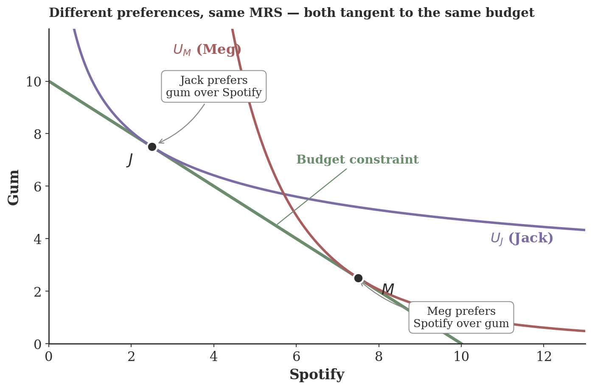
Same budget, different ICs
Priya and Diego share the same income and prices — same budget line. But Priya's IC is flat (she loves Audible); Diego's is steep (he loves Spotify).
Different optimal bundles
Priya picks \(P = (2.5,\,7.5)\) — lots of Audible, few Spotify. Diego picks \(D = (7.5,\,2.5)\) — the opposite.
Same MRS at both bundles
At \(P\) and at \(D\), the IC is tangent to the budget ⇒ \(\mathrm{MRS} = p_S/p_A\) for both. Markets equalize the MRS across consumers, even when preferences differ.
So far every optimum has been interior — positive amounts of both goods. Sometimes the consumer spends everything on one good and zero on the other. That's a corner solution.
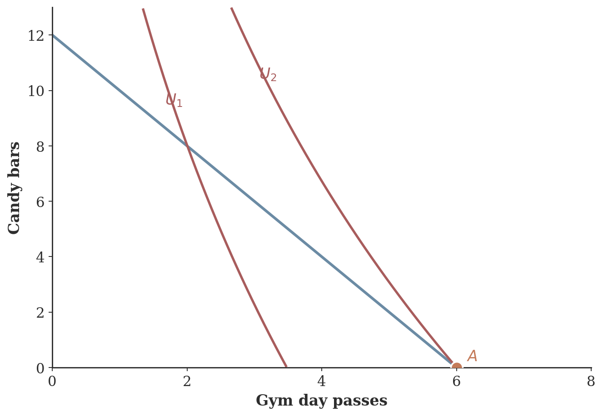
Allx (all X-axis good) — gym focus
Allx trains for the Boston Marathon. Budget \$36/week. Gym day passes \$6, candy bars \$3.
Max affordable: 6 gym passes or 12 candy bars. NE = higher utility.
The optimum is at the corner
Highest reachable IC \((U_2)\) touches the budget at \(A = (6,\,0)\) — all gym, no candy. \(U_1\) is a lower IC that crosses the budget at suboptimal bundles like \((2,\,8)\).
No tangency: IC is steeper than BC at \(A\) (and everywhere). MRS \(= MU_G/MU_C > p_G/p_C = 2\). Even the first candy bar isn't worth the gym time given up. → tangency rule fails; we'll use KKT conditions (Part 3).
Same idea, different corner: this time the optimum is on the Y-axis. The consumer spends nothing on the X-axis good.
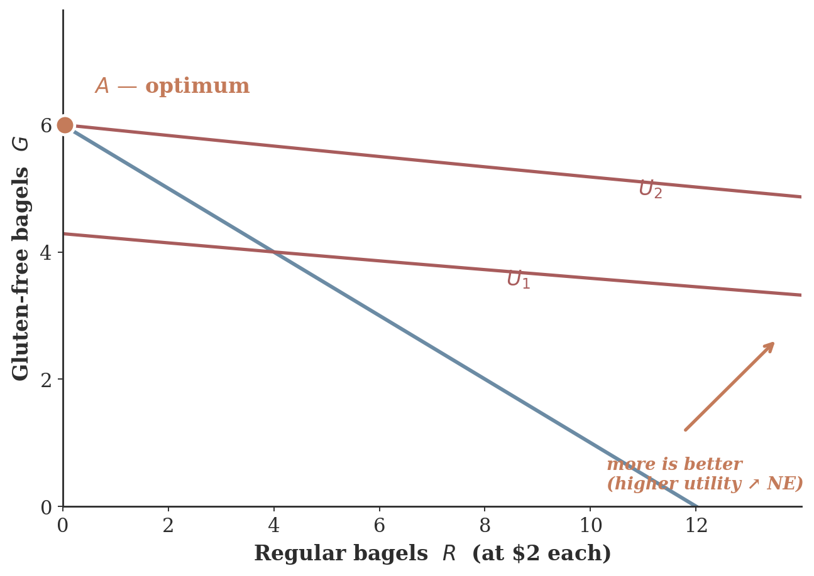
Ally (all Y-axis good) — gluten-free
Ally is gluten-free. Budget \$24/week. Regular bagels \$2 each, gluten-free bagels \$4 each.
Max affordable: 12 regular or 6 gluten-free. NE = higher utility.
The optimum is on the Y-axis
Highest reachable IC \((U_2)\) touches the budget at \(A = (0,\,6)\) — all gluten-free, no regular. \(U_1\) is a lower IC that crosses the budget at suboptimal bundles like \((4,\,4)\).
No tangency (other direction): Now IC is flatter than BC. MRS \(= MU_R/MU_G < p_R/p_G = 1/2\). Even the first regular bagel isn't worth the gluten-free ones given up. → corner on the Y-axis.
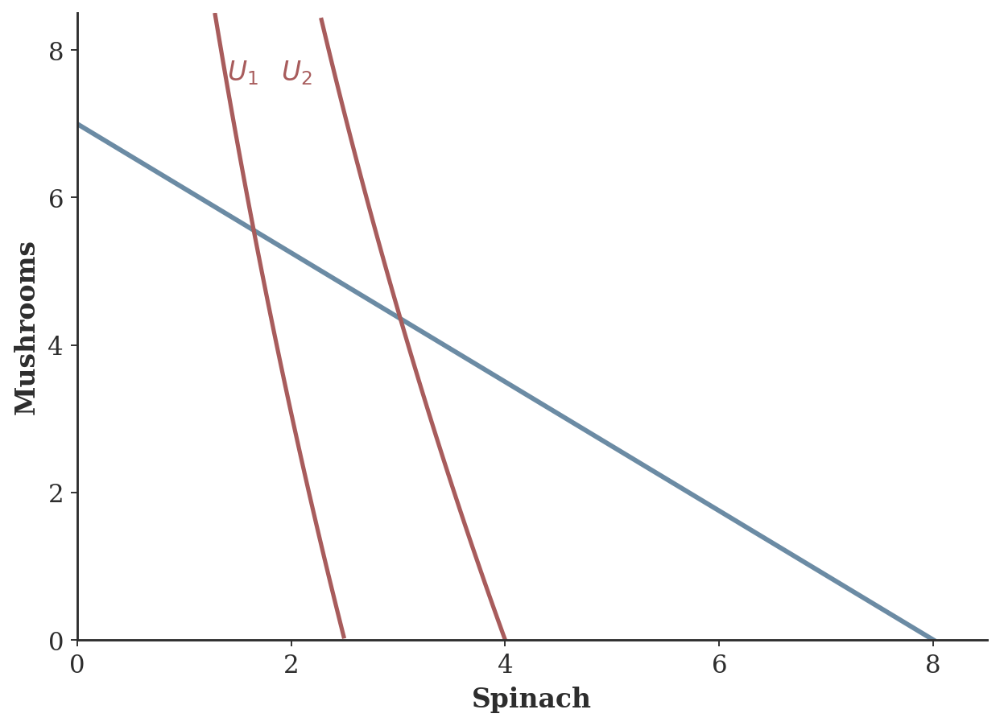
(Figure: Mushrooms and Spinach) The consumer maximizes utility by consuming:
60 sec to vote
Both \(U_1\) and \(U_2\) are steeper than the budget line everywhere — meaning \(\mathrm{MRS}_{SM} = \dfrac{MU_S}{MU_M} > \dfrac{p_S}{p_M}\) at every bundle. Even the first mushroom isn't worth the spinach given up. → corner solution on the X-axis at \((S=8,\; M=0)\).
Why the other options are wrong: A picks the wrong intercept — mushrooms-only ignores that the consumer values spinach more per dollar. C identifies an IC but no specific bundle, and \(U_2\) isn't even tangent to the budget. D assumes interior tangency — but tangency fails here.
15 min · The auxiliary variable that does all the work
\[\mathcal{L}(x_1, x_2, \lambda) \;=\; U(x_1, x_2) \;+\; \lambda \big( I - p_1 x_1 - p_2 x_2 \big).\]
Sign convention: constraint written as \(I - p_1 x_1 - p_2 x_2 \geq 0\) — "you can spend up to \(I\)"; \(\lambda \geq 0\).
FOC 1
\(\partial \mathcal{L}/\partial x_1 = MU_1 - \lambda p_1 = 0\)
FOC 2
\(\partial \mathcal{L}/\partial x_2 = MU_2 - \lambda p_2 = 0\)
FOC \(\lambda\)
\(\partial \mathcal{L}/\partial \lambda = I - p_1 x_1 - p_2 x_2 = 0\)
From FOC 1 and FOC 2: \(\;MU_1/p_1 = \lambda = MU_2/p_2\). The equimarginal principle is the FOC of the Lagrangian.
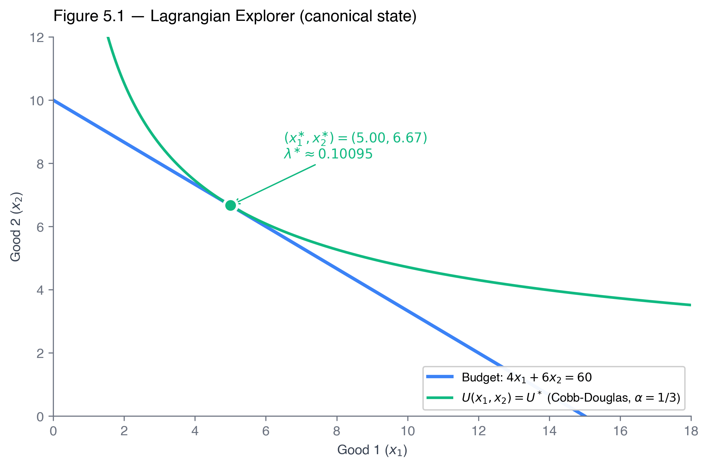
Figure 5.1 — budget line, indifference curves, tangency point, and \(\lambda^*\).
Cobb-Douglas \(U = x_1^{1/3} x_2^{2/3}\), \(p_1 = 4,\ p_2 = 6,\ I = 60\): tangency at \((5,\, 20/3)\), \(\lambda^* \approx 0.10095\). Every number is derived in closed form in Walkthrough W5.2.
Misconception alert. The Lagrangian is not “utility minus a penalty for breaking the budget.” It is the device that locks in both the equimarginal condition (\(MU_i/p_i\) equal across goods) and the budget constraint at once — solving it just means writing down the three FOCs.
Here \(\lambda^*\) is the multiplier on the budget constraint — the same shadow value of income we met earlier (utils per extra \$1). That is why it rides on \(I - p_1 x_1 - p_2 x_2\): it prices how much relaxing the budget is worth.
Giuseppe Lodovico Lagrangia — born in Turin, succeeded Euler at the Berlin Academy by his late twenties. Mécanique Analytique (1788) is the founding text of analytical mechanics.
The constrained-mechanics move
A particle constrained to a surface; a pendulum at fixed length. Introduce an auxiliary variable — the multiplier — that encodes the force the constraint exerts. The math: identical to \(\partial \mathcal{L}/\partial x_i = MU_i - \lambda p_i = 0\).
Hicks & Allen (1934) — tracing back to Slutsky (1915) — noticed the parallel. A consumer constrained to a budget line is mathematically identical to a particle constrained to a surface. Lagrange's "constraint force" became the economist's "marginal utility of income."
From the Mécanique preface
“No diagrams will be found in this work.”
A deliberate rejection of Newton's and Euler's geometric style: mechanics is a branch of pure analysis.
Goal: take the same Alex budget problem on games and Uber Eats (budget \$150, \(p_G = \$80\), \(p_U = \$30\)) and recover the optimum \((G^{\!*} = 1,\, U^{\!*} = \tfrac{7}{3})\) analytically — no enumerating bundles.
Setup — Cobb-Douglas with exponents calibrated to Alex's expenditure shares (\(\$80/\$150 = \tfrac{8}{15}\) on G, \(\$70/\$150 = \tfrac{7}{15}\) on U): \(U(G,\, U) = G^{8/15} \cdot U^{7/15}.\)
Step 1 — write the Lagrangian
\[\mathcal{L} = G^{8/15} U^{7/15} + \lambda(150 - 80G - 30U)\]
Step 2 — three first-order conditions
\(\dfrac{\partial \mathcal{L}}{\partial G} = \tfrac{8}{15}\, G^{-7/15} U^{7/15} - 80\lambda = 0\)
\(\dfrac{\partial \mathcal{L}}{\partial U} = \tfrac{7}{15}\, G^{8/15} U^{-8/15} - 30\lambda = 0\)
\(\dfrac{\partial \mathcal{L}}{\partial \lambda} = 150 - 80G - 30U = 0\)
Step 3 — divide FOCG by FOCU
\(\dfrac{MU_G}{MU_U} = \dfrac{p_G}{p_U}\) ⇒ \(\tfrac{8}{7} \cdot \dfrac{U}{G} = \tfrac{8}{3}\) ⇒ \(\boxed{\,U = \tfrac{7}{3} G\,}\)
Step 4 — substitute into the budget
\(80G + 30\!\left(\tfrac{7}{3}G\right) = 150\)
\(\;\;80G + 70G = 150\)
\(\;\;150G = 150\)
Step 5 — recover the optimum
\(G^{\!*} = 1,\;\; U^{\!*} = \tfrac{7}{3}\) ✓
Same bundle we found earlier by table-enumeration, dollar-by-dollar buying, and the tangency picture — now derived analytically.
\(\lambda^{\!*}\): from FOCU, \(\lambda^* = \tfrac{MU_U}{30} = \tfrac{1}{30}\cdot\tfrac{7}{15}\,(\tfrac{3}{7})^{8/15} \approx 0.0095\) utils/\$ — the shadow value of \$1 of income at the optimum (the "marginal utility of income" idea from earlier).
Suppose you re-label every utility number by doubling it: the new function is \(V(x_1, x_2) = 2 U(x_1, x_2)\). Same prices, same income. What happens to \(\lambda^*\) at the optimum?
60 sec to vote
New FOC: \(\partial V / \partial x_i = 2 \cdot MU_i = \lambda' p_i\). So \(\lambda' = 2 MU_i / p_i = 2 \lambda\). Bundle \((x_1^*, x_2^*)\) does not change — the FOC ratios \(MU_i/MU_j\) are invariant to monotonic transformations, so the optimum is the same. But \(\lambda\) carries units of utils per dollar — double the utility scale, double \(\lambda\).
Trap (B). Many students confuse "demand is ordinal-invariant" with "every Lagrangian-derived quantity is ordinal-invariant." Demand is; \(\lambda\) isn't. Units matter (HU2).
25 min · Six anchor walkthroughs, closed forms for every family
The story — Devon's senior recital prep
Devon is a music major prepping for his senior recital. Weekly \$60 splits between sheet music (\(x_1\), \$4/piece) and studio practice time (\(x_2\), \$6/hr). His preferences favor practice over collecting scores.
Problem
\(U(x_1, x_2) = x_1^{1/3} x_2^{2/3}\), \(p_1 = 4\), \(p_2 = 6\), \(I = 60\). Find \((x_1^*, x_2^*, \lambda^*)\).
Lagrangian
\[\mathcal{L} = x_1^{1/3} x_2^{2/3} + \lambda (60 - 4 x_1 - 6 x_2).\]
First-order conditions:
\[\dfrac{1}{3} x_1^{-2/3} x_2^{2/3} = 4 \lambda\]
\[\dfrac{2}{3} x_1^{1/3} x_2^{-1/3} = 6 \lambda\]
\[4 x_1 + 6 x_2 = 60\]
Three equations, three unknowns. Take the FOC ratio to eliminate \(\lambda\) first — that's the standard play.
Press Space to reveal · ↓ to advance to the solve slide.
Step 1 — Divide FOC1 by FOC2
\[\dfrac{(1/3) x_1^{-2/3} x_2^{2/3}}{(2/3) x_1^{1/3} x_2^{-1/3}} = \dfrac{4}{6} \;\Rightarrow\; \dfrac{1}{2} \cdot \dfrac{x_2}{x_1} = \dfrac{2}{3} \;\Rightarrow\; x_2 = \tfrac{4}{3} x_1.\]
Step 2 — Substitute into the budget
\(4 x_1 + 6 \cdot \tfrac{4}{3} x_1 = 12 x_1 = 60 \;\Rightarrow\; x_1^* = 5\)
Solution
\[\boxed{\;x_1^* = 5, \;\; x_2^* = \tfrac{20}{3} \approx 6.67, \;\; \lambda^* = \tfrac{\sqrt[3]{6}}{18} \approx 0.10095.\;}\]
Step 3 — Check
Budget: \(4(5)+6(20/3)=60\) ✓ | shares \(=\) exponents: \(20/60 = 1/3\), \(40/60 = 2/3\) ✓ | tangency \(\mathrm{MRS} = 2/3 = p_1/p_2\) ✓
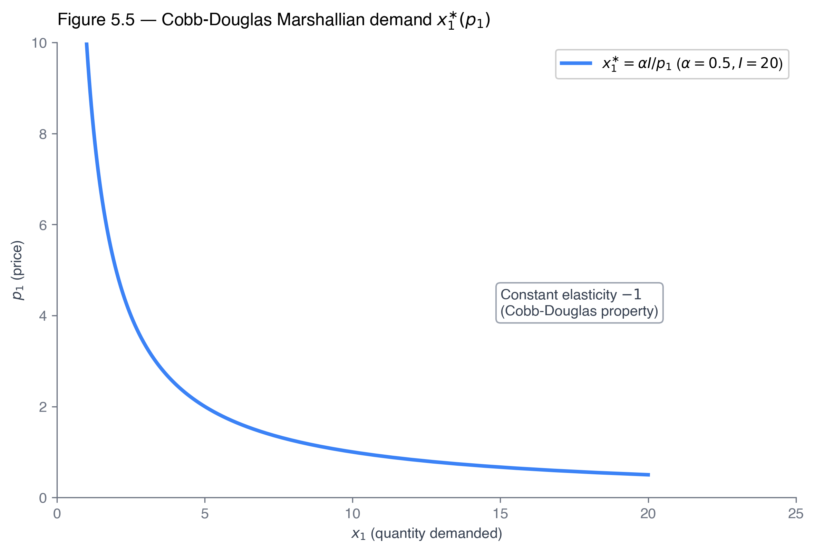
Figure 5.5 — Cobb-Douglas demand at \(\alpha=1/3\).
General case (CC2): the same two moves with \(\alpha\) kept symbolic give \(x_i^*(p, I) = \alpha_i I / p_i\) — budget shares = exponents. Press ↓ for the derivation.
Same two moves as the worked case — but keep \(\alpha\) symbolic. For \(U = x_1^{\alpha} x_2^{1-\alpha}\), \(\alpha \in (0,1)\):
Step 1 — FOC ratio (kills \(\lambda\))
\[\dfrac{MU_1}{MU_2} = \dfrac{\alpha}{1-\alpha}\cdot\dfrac{x_2}{x_1} = \dfrac{p_1}{p_2} \;\Rightarrow\; p_2 x_2 = \dfrac{1-\alpha}{\alpha}\,p_1 x_1.\]
Step 2 — substitute into the budget
\[p_1 x_1 + \dfrac{1-\alpha}{\alpha}p_1 x_1 = \dfrac{1}{\alpha}\,p_1 x_1 = I \;\Rightarrow\; p_1 x_1 = \alpha I.\]
\[\boxed{\;x_1^* = \dfrac{\alpha I}{p_1}, \qquad x_2^* = \dfrac{(1-\alpha) I}{p_2}.\;}\]
and \(\lambda^* = \alpha^{\alpha}(1-\alpha)^{1-\alpha}\,p_1^{-\alpha}\,p_2^{-(1-\alpha)}\)
Constant shares. \(\dfrac{p_1 x_1^*}{I} = \alpha\) and \(\dfrac{p_2 x_2^*}{I} = 1-\alpha\) — identically, whatever the prices or income. Spending shares equal the exponents — the signature Cobb-Douglas prediction, and the easiest empirical test (→ TD1 / the CEX data).
The story — Avery's home pasta nights
Avery cooks pasta dinners for her roommates every week. Each plate requires tomatoes (\(x_1\), \$4/cup) and fresh basil (\(x_2\), \$6/oz) in a fixed ratio — extra of either gets thrown out. Weekly grocery budget \$48.
Problem
\(U(x_1, x_2) = \min(2 x_1, 3 x_2)\), \(p_1 = 4\), \(p_2 = 6\), \(I = 48\).
Indifference curves are L-shaped — kinks along the ridge condition \(2 x_1 = 3 x_2\). The standard FOCs of \(\min\) don't exist at the kink, but the optimum is well-defined: nobody would ever buy extra of the good in surplus.
Two equations: ridge \(x_2 = 2 x_1 / 3\) and budget \(4 x_1 + 6 x_2 = 48\). Substitute: \(4 x_1 + 4 x_1 = 8 x_1 = 48\).
\[\boxed{\;x_1^* = 6, \;\; x_2^* = 4, \;\; U^* = 12.\;}\]
Checks. Spend \(4(6)+6(4)=24+24=48\) ✓. Ridge \(2(6)=3(4)=12\) ✓. \(U^* = \min(12, 12) = 12\).
Lesson. Utility maximization is more general than the differentiable tangency condition. When tangency doesn't apply, use the geometry of the indifference map. Here: ride the ridge until you hit the budget.
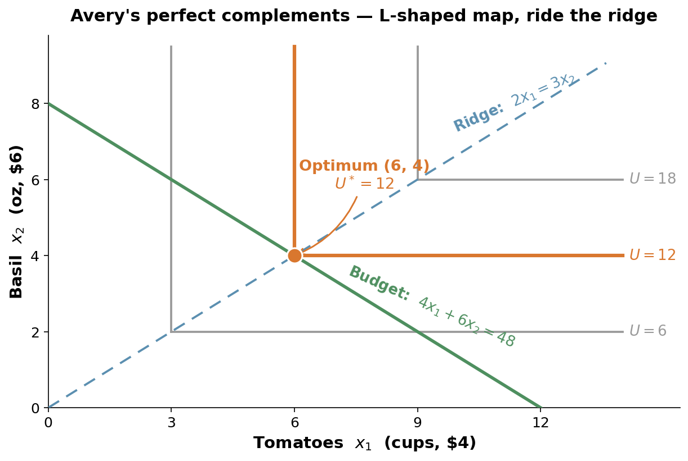
What the picture shows
Every indifference curve is L-shaped, and the corner of each L sits on the ridge \(2x_1 = 3x_2\). Along an arm, extra tomatoes or extra basil add zero utility — the surplus good is thrown out.
Why we “ride the ridge”
A rational buyer never sits on an arm — that spends money on a good that gets wasted. So the optimum must be a corner on the ridge, pinned down by two equations: ridge + budget.
The ridge crosses the \$48 budget at \((6,\,4)\) — the kink of the highest L the budget can reach, \(U^* = 12\). No tangency needed; the geometry hands you the answer.
The story — Skylar's finals-week caffeine
Skylar pulls all-nighters in Snell Library during finals. She doesn't care where the caffeine comes from — only how much. Two options: cold-brew cans (\(x_1\), \$1, 2 mg of "alertness" each) and espresso shots (\(x_2\), \$2, 3 mg each). \$10 to spend.
\(U(x_1, x_2) = 2 x_1 + 3 x_2\), \(p_1 = 1\), \(p_2 = 2\), \(I = 10\).
MRS is constant: \(MU_1/MU_2 = 2/3\). Price ratio \(p_1/p_2 = 1/2\). Compare marginal utility per dollar:
Good 1 delivers more utility per dollar ⇒ spend everything on good 1:
\[\boxed{\;x_1^* = 10, \;\; x_2^* = 0, \;\; U^* = 20.\;}\]
Tangency fails — the model isn't broken, the optimum is on the boundary.
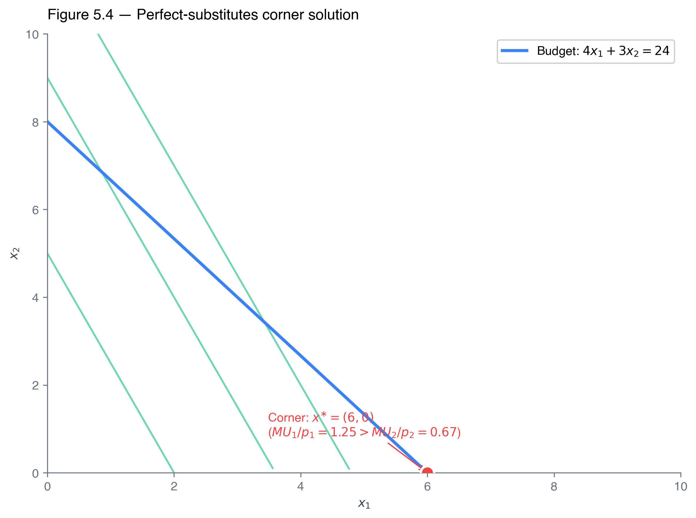
Figure 5.4 — corner at \(x_2 = 0\); knife-edge case (MRS = p ratio) yields a continuum of optima.
The story — Maya's week, 97 hours to split
Maya is a Northeastern student earning \$18/hour on co-op work. After sleep and class, she has 97 discretionary hours per week to divide three ways:
Utility (in dollar-equivalent units)
\[U(s, h, \ell) = 60\, g(s) + 96 \ln(18 h) + 732 \ln \ell\]
\(g(s) = 0.2 s\) up to 30 hours (linear, \$12/hr at the margin), then flattens.
Lagrangian — one time constraint
\[\mathcal{L} = 60 g(s) + 96 \ln(18 h) + 732 \ln \ell + \lambda(97 - s - h - \ell)\]
The constraint says her three uses must add to 97 hours. \(\lambda\) here reads as "dollars per discretionary hour" — the value of one extra hour at the optimum.
FOCs assume linear-\(g\) regime, \(s^* \leq 30\).
Step 1 — \(\lambda\) from the study FOC
\(\partial \mathcal{L}/\partial s = 60 \cdot 0.2 - \lambda = 0 \;\Rightarrow\; \boxed{\lambda^* = 12}\)
Step 2 — \(h^*\) and \(\ell^*\) from the work + leisure FOCs
Derivative of the log — the constant inside drops out, since \(\ln(18h)=\ln 18+\ln h\): \(\dfrac{\partial}{\partial h}\,96\ln(18h)=\dfrac{96}{h}\), \(\dfrac{\partial}{\partial \ell}\,732\ln\ell=\dfrac{732}{\ell}\).
\(96/h - \lambda = 0 \Rightarrow h^* = 96/12 = 8\) | \(732/\ell - \lambda = 0 \Rightarrow \ell^* = 732/12 = 61\)
Step 3 — \(s^*\) from the time budget
\(s^* = 97 - 8 - 61 = 28\)
Solution
\[\boxed{\;s^* = 28, \;\; h^* = 8, \;\; \ell^* = 61 \text{ hr/wk}, \;\; \lambda^* = \$12/\text{hr}.\;}\]
Regime check: \(s^* = 28 \leq 30\) ✓. ATUS 2024 ~21.7 hr/wk educational activities for full-time students — \(s^* = 28\) plausible for a freelance designer.
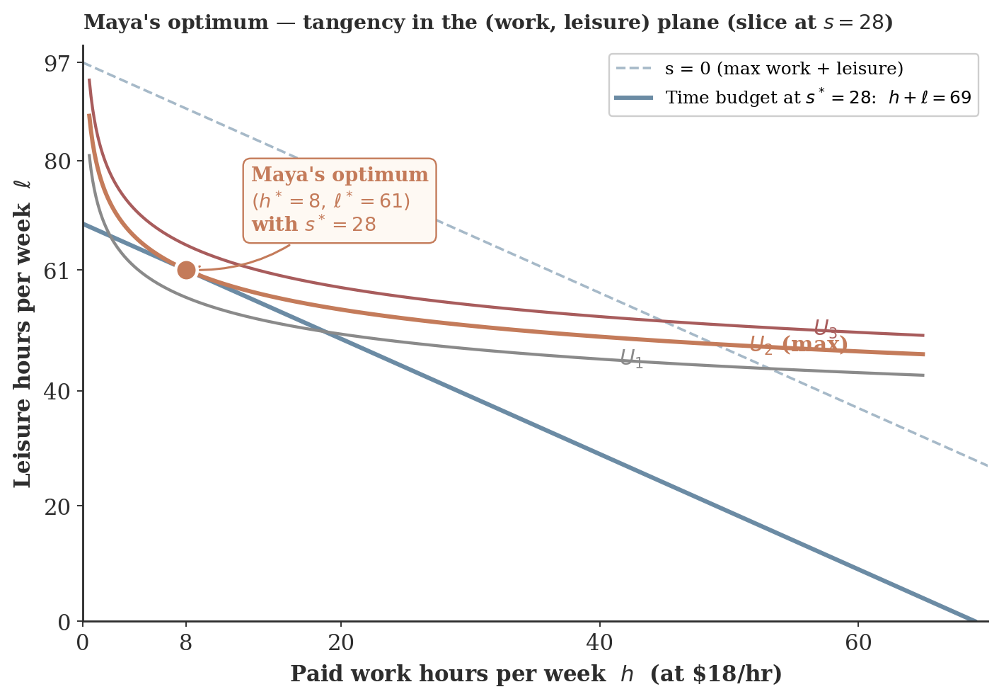
Figure 5.6 — Maya's three-use time budget.
Equimarginal check. \(\$12/\text{hr}\) at every margin: study (\$60 × 0.2), work (\$96/8), leisure (\$732/61). Same number everywhere — this is the equimarginal principle in dollar units.
Suppose Maya gets a raise: \$18/hr → \$24/hr. How does her time allocation change?
Re-solve: the work FOC
New utility piece: \(96 \ln(24 h)\). The work FOC:
\(\dfrac{\partial U}{\partial h} = \dfrac{96 \cdot 24}{24\,h} = \dfrac{96}{h}\)
The wage cancels. The 24 in the numerator and the 24 inside the log cancel exactly. Result: \(\lambda^* = 12,\, h^* = 8,\, \ell^* = 61,\, s^* = 28\) — nothing changes.
Why? Two effects cancel
In log-utility, these cancel exactly. Net change: zero. This is the signature of unit elasticity of substitution.
Is this realistic? No — real Frisch elasticities are around 0.3–0.5 (substitution dominates, people work a bit more when wages rise). Log utility is a useful baseline; Ch 6 swaps it for a more flexible form to match the data.
You just saw a 20% raise leave Maya's hours unchanged. Now, in the same log utility \(U = 60 g(s) + 96 \ln c + 732 \ln \ell\), her wage triples: \$18 → \$54/hr. What happens to her optimal work hours \(h^*\)?
90 sec to vote
The wage drops out of the work FOC: \(\ln c = \ln(wh) = \ln w + \ln h\), so \(\partial U/\partial h = 96/h\) — no \(w\) in it. Under log utility the substitution and income effects cancel for any wage change. 20% or 200%, \(h^*\) stays at 8: the size of the raise is irrelevant — the log structure is what matters.
Why empirics says A. Real labor-supply data (Sigurdsson 2025: Frisch elasticity ~0.4) shows hours rising with wage — substitution dominates. To match this in the Lagrangian, replace \(\ln c\) with \(c^{1-\sigma}/(1-\sigma)\), \(\sigma > 1\): consumption-utility more concave than log breaks the offset. Full Slutsky decomposition in Ch 6.
The story — Jordan's concert tickets vs. everything else
Jordan has \$100 a month to split between live-event tickets (\(x_1\), \$10 each — the first few shows are a thrill, each extra one adds less) and money for all other goods (\(x_2\), the numeraire, \$1 = 1 util). When Jordan's income rises, the number of shows doesn't budge — the extra just spreads across everything else.
\(U(x_1, x_2) = 40\sqrt{x_1} + x_2\), \(p_1 = 10\), \(p_2 = 1\), \(I = 100\).
FOCs: \(\tfrac{40}{2\sqrt{x_1}} = 10\lambda\), \(1 = \lambda\), \(10 x_1 + x_2 = 100\).
From FOC2: \(\lambda^* = 1\). From FOC1: \(\tfrac{20}{\sqrt{x_1^*}} = 10 \Rightarrow \sqrt{x_1^*} = 2 \Rightarrow x_1^* = 4\). Budget: \(x_2^* = 100 - 40 = 60\).
\[\boxed{\;x_1^* = 4, \;\; x_2^* = 60, \;\; \lambda^* = 1.\;}\]
Crucially: \(x_1^*\) does not depend on \(I\). Double income to \$200 and \(x_1^*\) is still 4; \(x_2^*\) jumps to 160 — every extra dollar flows to other goods.
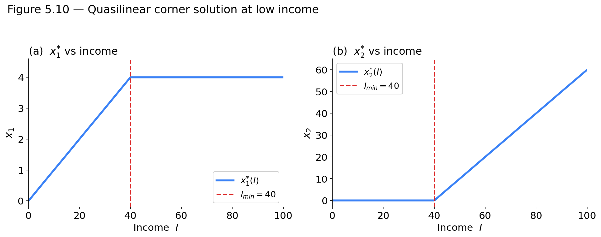
Figure 5.10 — quasilinear corner risk at low \(I\).
Why this matters. Quasilinear utility makes good \(x_2\) the numeraire that absorbs all income changes. This is the workhorse for partial-equilibrium welfare analysis (consumer surplus calculations in Ch 6 / Ch 11).
Plain English: \(v(p, I)\) is the highest utility a consumer can reach given prices \(p\) and income \(I\), after they've already optimized. It's the "best you can do" number at those prices and that income.
For Cobb-Douglas \(U = x_1^{\alpha} x_2^{1-\alpha}\), plug the CC2 demands \(x_1^* = \alpha I/p_1\), \(x_2^* = (1-\alpha) I/p_2\) back into \(U\):
\[U(x_1^*, x_2^*) = \left(\dfrac{\alpha I}{p_1}\right)^{\alpha}\left(\dfrac{(1-\alpha) I}{p_2}\right)^{1-\alpha}\]
collect the constants; the income terms merge, \(I^{\alpha} I^{1-\alpha} = I\) ⇒
\[v(p_1, p_2, I) = \alpha^\alpha (1-\alpha)^{1-\alpha} \cdot \dfrac{I}{p_1^\alpha p_2^{1-\alpha}}\]
\(v\) is linear in \(I\) for Cobb-Douglas — the coefficient on \(I\) is \(\partial v/\partial I\).
At \(\alpha = 1/3\), \(p_1 = 4\), \(p_2 = 6\):
\(\dfrac{\partial v}{\partial I} = \dfrac{\sqrt[3]{6}}{18} \approx 0.10095\)
\[\boxed{\;\dfrac{\partial v}{\partial I} = \lambda^* \approx 0.10095\;}\]
Matches \(\lambda^*\) from W5.2 to 4 decimals — the envelope theorem verified.
Why we need \(v(p, I)\) for next chapter (income & substitution effects)
Ch 6 asks: when a price changes, how much of the demand change is "I now prefer the cheaper good more" (substitution effect) vs "I'm richer/poorer in real terms" (income effect)? To separate them you need to know what utility level the consumer was at before, and how much income would keep them at that same utility under the new prices — that's exactly what \(v(p, I)\) lets you compute. The Slutsky decomposition we'll do next chapter cannot be written without indirect utility.
Plain English: if you know the value function \(v(p, I)\) — say you estimated it from welfare data — you can pull the demand functions straight back out by differentiating. No need to re-solve the Lagrangian.
\[\boxed{\;x_i^*(p, I) \;=\; -\,\dfrac{\partial v/\partial p_i}{\partial v/\partial I}.\;}\]
Check it on Cobb-Douglas
From W5.A1, \(v = \alpha^{\alpha}(1-\alpha)^{1-\alpha}\, I\, p_1^{-\alpha} p_2^{-(1-\alpha)}\). Two derivatives:
\[\dfrac{\partial v}{\partial p_1} = -\,\dfrac{\alpha\, v}{p_1}, \qquad \dfrac{\partial v}{\partial I} = \dfrac{v}{I}.\]
(\(v\) carries \(p_1^{-\alpha}\), so differentiating pulls down \(-\alpha/p_1\); \(v\) is linear in \(I\), so \(\partial v/\partial I = v/I\).)
\[-\dfrac{\partial v/\partial p_1}{\partial v/\partial I} = -\dfrac{-\alpha v/p_1}{v/I} = \dfrac{\alpha I}{p_1} = x_1^{*} \;\checkmark\]
Exactly the closed form from CC2 — recovered without re-solving. You'll use this in the AI Lab. The formal proof (and its producer-side dual, Shephard's lemma) come in Ch 6.
W5.7 — complements, \(I' = 96\)
Re-do W5.3 with income doubled to \(I' = 96\). Same ridge \(x_2 = 2 x_1 / 3\), new budget: \(8 x_1 = 96\).
\[\boxed{\;x_1^{*\prime} = 12, \;\; x_2^{*\prime} = 8.\;}\]
Both quantities exactly double. Demand is homogeneous of degree 1 in \(I\) for both Cobb-Douglas and perfect complements; only quasilinear has zero income effect on one good.
W5.8 — three-good Cobb-Douglas
\(U = x_1^{0.4} x_2^{0.3} x_3^{0.3}\), \(p = (5, 4, 3)\), \(I = 60\). Use the closed form \(x_i^* = \alpha_i I / p_i\):
\[\boxed{\;x_1^* = 4.8, \;\; x_2^* = 4.5, \;\; x_3^* = 6.\;}\]
Shares exactly equal the exponents: \(p_1 x_1^*/I = 0.4\), \(p_2 x_2^*/I = 0.3\), \(p_3 x_3^*/I = 0.3\). The structure generalizes to any \(N\).
Pattern. Adding goods doesn't change the structure of the Lagrangian — more FOCs, same logic. The Cobb-Douglas constant-budget-share prediction holds in arbitrary dimension. This is why Cobb-Douglas is the workhorse for empirical demand systems (CEX shares, Theory and Data TD1).
20 min · What happens when tangency fails — and where the kinks live in real policy
Case 1: Linear preferences
\(U = ax_1 + bx_2\): constant MRS \(= a/b\). Compare to \(p_1/p_2\) — the corner with higher \(MU/p\) wins. W5.4.
Case 2: Non-negativity binds
Unconstrained tangency would push \(x_i < 0\) (infeasible). Optimum slides to the corner where \(x_i = 0\). Problem 9.
Case 3: Non-differentiable \(U\)
\(U = \min(\cdot)\): kink at the ridge \(ax_1 = bx_2\). FOCs don't apply — use ridge + budget. W5.3.
Two-good corner diagnostic. Check the candidate corners \((I/p_1, 0)\) and \((0, I/p_2)\):
Five worked applications in Appendix §5.A. We won't deep-dive in class — read these as the empirical anchors for the Lagrangian machinery.
A1 — Maya wage 20% ↑
Log-log utility ⇒ sub. and income effects cancel exactly, \(h^* = 8\) unchanged. Empirically Frisch ~0.4 (Sigurdsson 2025); model needs \(\sigma > 1\) to match.
A2 — ACA APTC kink
Piecewise-linear budget. Solve FOCs per segment, compare at kink. Empirical bunching muted by frictions (Handel-Kolstad-Spinnewijn 2019).
A3 — SNAP in-kind kink
Horizontal extension on food axis. Extra-marginal = SNAP = cash; infra-marginal = optimum on kink (Hoynes-Schanzenbach).
A4 — Streaming bundles
Disney/Hulu/ESPN+ menu → discrete budget set. Lagrangian degenerates: enumerate portfolios, pick the best.
A5 — Boston commute
Quasilinear utility on commute disutility. Mission Hill vs Back Bay (~\$877/mo gap) — replicable with current Zillow + ACS data.
Pattern across A2–A5
When budgets bend or jump, the Lagrangian adapts piecewise: solve smooth FOCs, evaluate at the kink/portfolio, pick the best. Tangency is not the diagnostic.
Full treatment in Appendix §5.A. Problems 10 (SNAP) and 11 (ACA) are Stretch (read-on-your-own, not in the graded MC bank).
Cobb-Douglas predicts constant budget shares — the fraction of income spent on each category should equal that good's exponent (\(\alpha_i\)). Let's check this against actual US data.
The data — BLS Consumer Expenditure Survey 2024
The average US household spends \$78,535/year. Here's how it splits:
The model's verdict
If we plug \(\alpha_\text{Housing} = 0.334\), \(\alpha_\text{Transit} = 0.170\), \(\alpha_\text{Food} = 0.129\), \(\alpha_\text{Health} = 0.079\) into Cobb-Douglas, the model predicts these exact shares. At the population average, the simple Cobb-Douglas rule works.
But: Cobb-Douglas says the same shares hold at every income level. In reality, lower-income households spend a bigger share on food (Engel's Law). The model fits the average; it misses the inequality pattern.
A deeper limit — fairness. The model assumes you value only your own bundle. But relative comparisons matter: even capuchin monkeys reject a fair reward the moment they see a peer get a better one. ▶ Watch (2 min)
Your turn — HW Ch 5, Problem 12 [Data · 8 pts]. Pull the BLS 2024 CEX income-decile tables; compute housing / transport / food budget shares by decile. Constant (Cobb-Douglas) or drifting (Engel)?
The Lagrangian model says: the rational consumer surveys all options and picks the highest-utility one. Do real people do this when choosing health insurance?
What the data say
When ACA marketplace customers re-enroll each year, most stick with last year's plan — even when a cheaper plan with the same benefits is right there. Plan choices are sticky, not freshly re-optimized (Handel, Kolstad & Spinnewijn, 2019).
The kicker
In Dutch health-insurance data, the top 5% of decision-makers get 3× the value out of the same set of plans as the bottom 5% — same prices, same options, very different outcomes. People with more education and quantitative training make better choices.
Takeaway: The Lagrangian shows what the optimum would be — a benchmark. Real choices are dragged off the benchmark by inertia, complexity, and defaults. The gap between model and reality is itself something policy can target (auto-enrollment in better plans, simpler comparison tools).
Maya's Lagrangian (W5.5) said \(s^* = 28,\, h^* = 8,\, \ell^* = 61\) hours/week. Is that realistic? Compare to real student time-use surveys.
What the surveys find (full-time US students)
Maya's model vs reality
Maya's optimum: study 28, work 8, leisure 61. The model is in the right ballpark — study slightly above the median (matches an engaged student), work right at the typical level, leisure absorbing the rest.
What if YOUR allocation looks different? That's the point. Different preference weights give different optima, and the Lagrangian still tells you the rule (equal marginal value across uses). Try it: how would the weights \(\{96, 732\}\) have to change to predict your split?
| Element | Setup | Headline number |
|---|---|---|
| W5.1 Alex's entertainment budget | \(p_G=80\to 50\), \(p_U=30\), \(I=150\) | Pre: \(A(0,5)\), \(B(1.875,0)\), slope \(-8/3\); post: \(D(3,0)\), slope \(-5/3\) |
| W5.2 Cobb-Douglas | \(U=x_1^{1/3} x_2^{2/3}\), \(p_1=4, p_2=6, I=60\) | \(x_1^*=5, x_2^*=20/3, \lambda^*\approx 0.10095\) |
| W5.3 Complements | \(U=\min(2x_1, 3x_2)\), \(p_1=4, p_2=6, I=48\) | \(x_1^*=6, x_2^*=4, U^*=12\) |
| W5.4 Substitutes corner | \(U=2x_1+3x_2\), \(p_1=1, p_2=2, I=10\) | \(x_1^*=10, x_2^*=0, U^*=20\) |
| W5.5 Maya labor-leisure | Three-use time, \(\lambda\) reads as \$/hr | \(s^*=28, h^*=8, \ell^*=61, \lambda^*=\$12\)/hr |
| W5.6 Quasilinear | \(U=40\sqrt{x_1}+x_2\), \(p_1=10, p_2=1, I=100\) | \(x_1^*=4, x_2^*=60, \lambda^*=1\) |
| W5.7 \(I\)-doubling | Same as W5.3 with \(I' = 96\) | \(x_1^{*\prime}=12, x_2^{*\prime}=8\) (both double) |
| W5.8 Three-good Cobb-Douglas | \(U=x_1^{0.4}x_2^{0.3}x_3^{0.3}\), \(p=(5,4,3), I=60\) | \(x_1^*=4.8, x_2^*=4.5, x_3^*=6\) |
| W5.A1 Indirect utility (appendix §5.B) | Cobb-Douglas, \(\alpha=1/3\) | \(\partial v/\partial I \approx 0.10095 = \lambda^*\) (envelope) |
Slutsky decomposition
Decompose any price change into substitution + income effects. Sub. effect always ≤ 0 (own-price) regardless of preferences.
Hicksian demand
Compensated demand — expenditure minimized at fixed utility. The dual to Marshallian demand. Roy ↔ Shephard.
Aggregation
Sum individual demands to market demand. When does aggregation preserve representative-agent structure?
Elasticity zoo
Own-price, cross-price, income elasticities; Engel curves; substitutes vs complements algebraically defined.
All terms defined inline at first appearance in the chapter; consolidated glossary in the textbook end-matter.
On the index card (or Canvas Quick Quiz):
Drop on the way out, or submit on Canvas before 11:59 PM. Counts toward attendance.
Textbook anchors
Math + visual
Empirical anchors
Frontier papers
Bring with you
Pre-read
HW §5 due before next class. Problems 1–5 are required (Cobb-Douglas, complements, substitutes corner, three-good, quasilinear). Problems 10, 11 (SNAP and ACA kinks) are optional challenge. See Canvas for the gradebook structure.
Office hours · Tue/Thu 2:00–3:30 pm · 308 Lake Hall
“No diagrams will be found in this work.” — Lagrange, 1788. (We use plenty.)